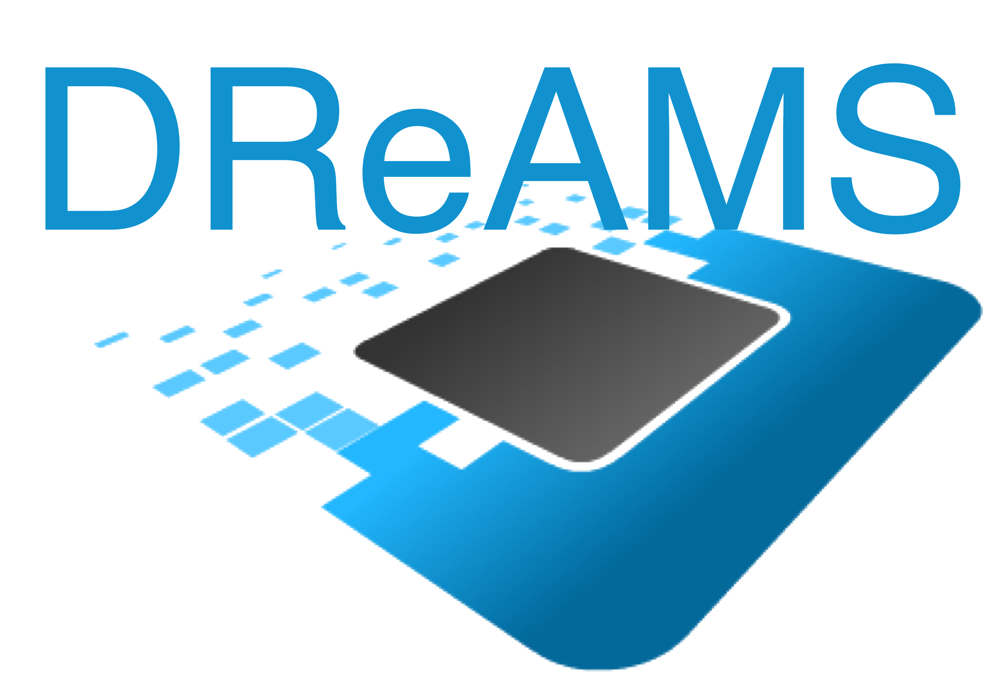

DReAMS is a research line that sees the FPGA at the center of all the work/research designed and developed: e.g. IP design, reconfigurable systems, prototyping architectures, acceleration algorithms. FPGAs are not necessarily the actual direct object of the work done, e.g., systems design and prototyping, but they based the rationale behind them, e.g. CAD tools, place and route algorithms, flow planning.